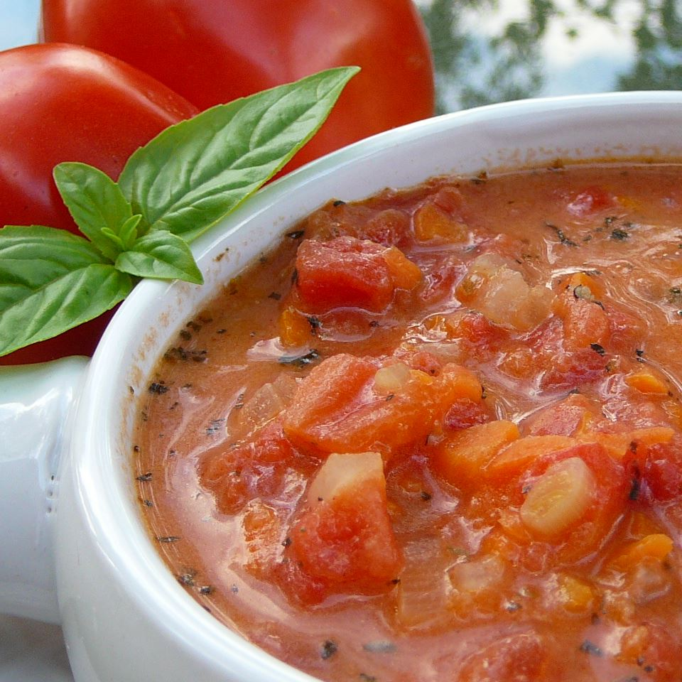

Jersey Fresh Tomato Soup

Description
New Jersey is a well-known prodducer of tomatoes. Having our own garden leaves us with an abundance at the end of the season. Not wanting the tomatoes to go to waste, my Bebe and I came up with our favorite version of tomato soup.
Ingredients
- 7 cups peeled, seeded, and chopped tomatos
- 3/4 cup fine chopped onion
- 1 cup finely chopped carrots
- 1 can of chicken broth
- 1 tablespoon white sugar
- 2 teaspoons sea salt
- 3 tablespoons butter
- 3 tablespoons all-purpose flour
- 1 cup 2% milk
- 2 teaspoons dried basil
- 1/2 teaspoon celery salt
- 1/2 teaspoon ground black pepper
- 1/4 teaspoon garlic powder
Steps
- Bring the tomatoes, carrots, and onion to a boil over medium-high heat in a stockpot, then reduce the heat to medium-low. Simmer for 30 minutes. Stir in the chicken broth, sugar, and salt.
- Melt the butter over medium-low heat in a small saucepan. Whisk in the flour, stirring until thick.
- Slowly whisk in the milk until smooth. Cook and stir, whisking constantly until thickend, about 5 minutes, then stir milk mixture in to the stockpot.
- Season with basil, celery salt, black pepper, and garlic powder.
- Continue to simmer the soup on low to reduce and thicken, about 1 hour.